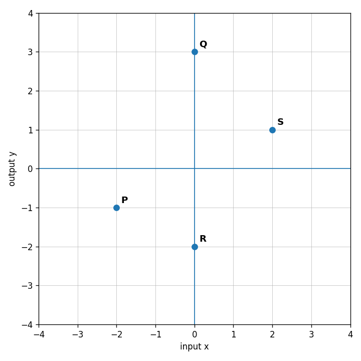

Practice Set 1.2.3
Use Graph A. What is the output when the input is $-3$? What is the output when the input is $1$?

Use Graph B. Is the relation a function? Explain using repeated inputs or the vertical-line idea.

A function has rule $h(x)=2x-5$. A teammate starts the table below. Find the error, correct it, and explain how you know.
| $x$ | -1 | 0 | 2 | 4 |
|---|---|---|---|---|
| $h(x)$ | -7 | -5 | -1 | 4 |
Design two different function machines that both give an output of $10$ when the input is $3$. Then test both machines with input $5$ and explain why the machines are not the same function.
Evaluate: $$30-6(2+1)$$
Evaluate $5q+2$ when $q=-3$.
Evaluate: $$2(5^2)-3^3$$
Evaluate $\sqrt{49}+3^2$.
A babysitter charges a 12 dollar travel fee plus 9 dollars per hour. Write and evaluate an expression for 6 hours.
Evaluate $a^2+2ab$ when $a=-3$ and $b=4$.
A student says $(-4)^2$ and $-4^2$ must have the same value. Analyze the claim and evaluate both expressions.
A ticket company charges $5$ dollars per ticket plus a service fee of $3$ dollars per order. Create two different expressions for the total cost of buying $n$ tickets in two separate orders, then explain what each expression means.
A pattern starts at $12$ and decreases by $3$ each step. State the next three values.
Complete the table for $y=5x-4$.
| $x$ | 0 | 1 | 2 | 3 |
|---|---|---|---|---|
| $y$ |
Compare Rule A: $y=2x+7$ and Rule B: $y=7x+2$. How are the starting value and change different?
Create a context, table, and rule for a pattern that starts at $6$ and increases by $4$ each step. Explain how all three representations match.